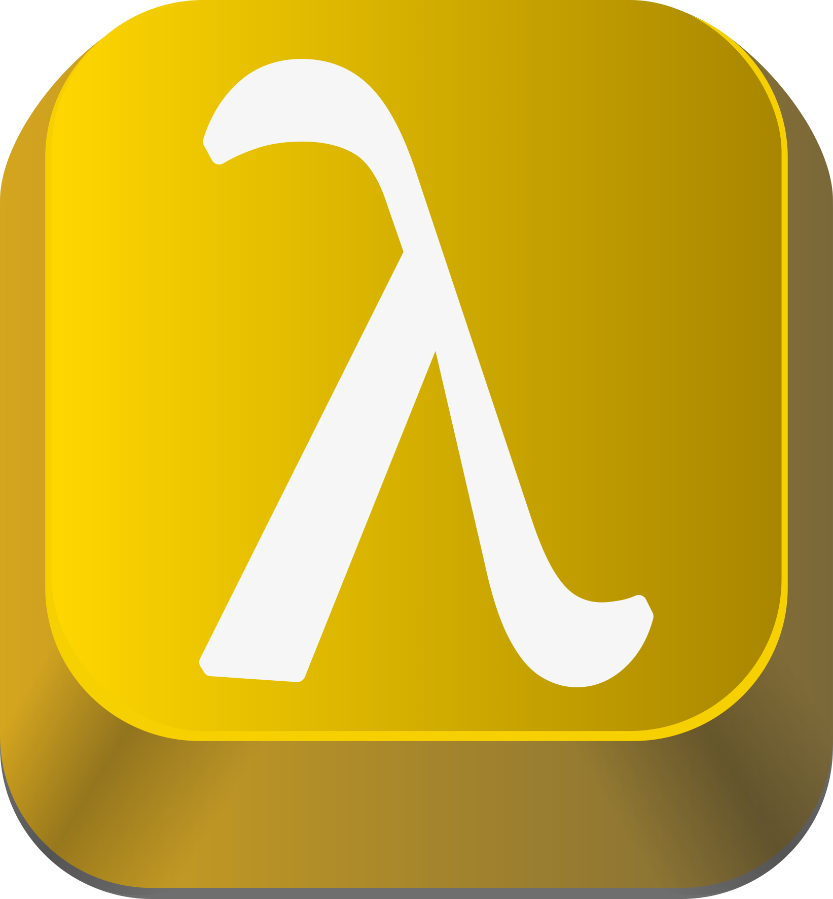

DSL KeyPad

☵
Trigram Kǎn (Water)
[ Eight Trigrams ]
DSL KeyPad
Thousands Unicode symbols: Latin, Cyrillic, Runes, Glagolitic, Mathematical symbols, Alchemy and much more become easily accessible with DSL KeyPad.
*Requires AutoHotkey v2 installation.